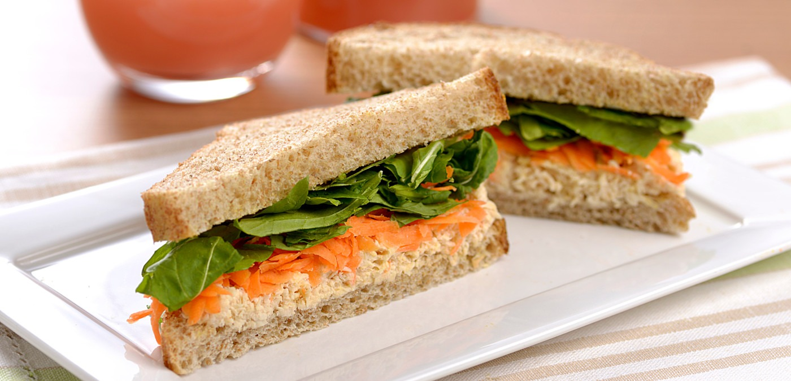

Sanduíche Natural de Frango

⏱️ 20 min
👨👩👧👦 Serve 4 sanduíches
Ingredientes
- 8 fatias de pão de forma integral ou tradicional
- 2 xícaras (chá) de frango desfiado
- 2 colheres (sopa) de maionese ou iogurte
- Cenoura ralada, tomate e alface a gosto
- Sal, pimenta e cheiro-verde a gosto
Modo de preparo
- Misture o frango desfiado com maionese (ou iogurte), cenoura ralada e temperos.
- Monte o sanduíche com a pasta de frango, alface e tomate entre as fatias de pão.
- Corte ao meio e sirva gelado ou em temperatura ambiente.
 Papo de Panela
Papo de Panela